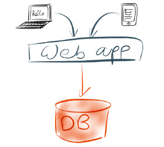
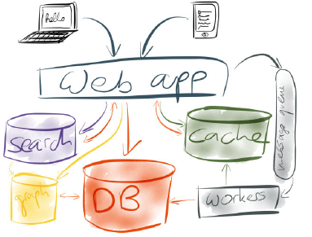
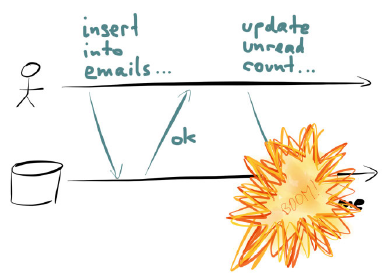
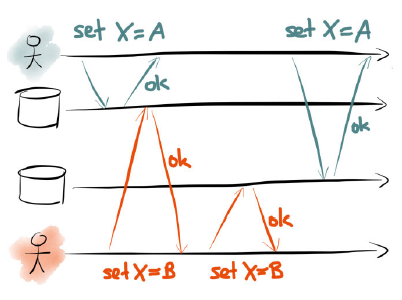
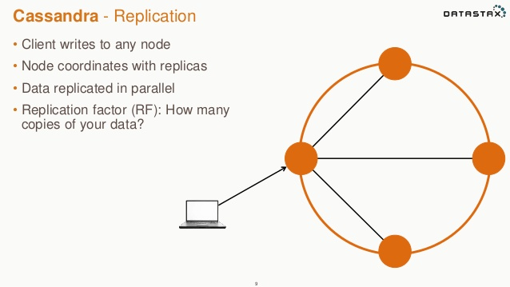
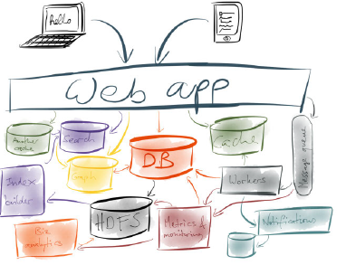
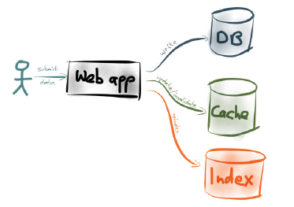
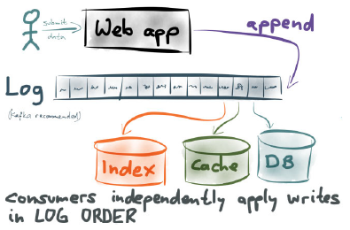
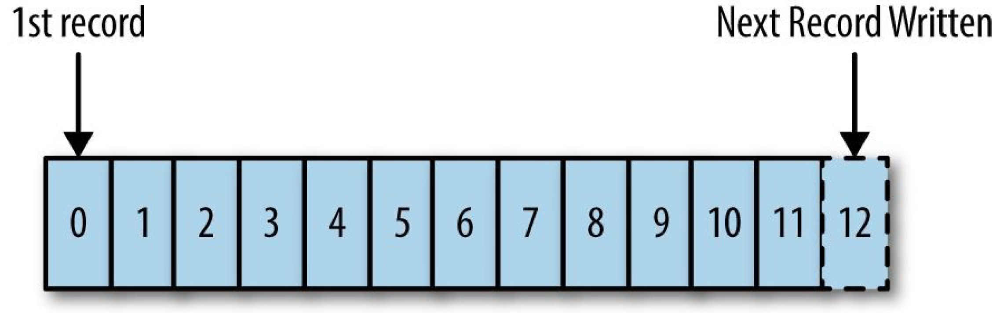
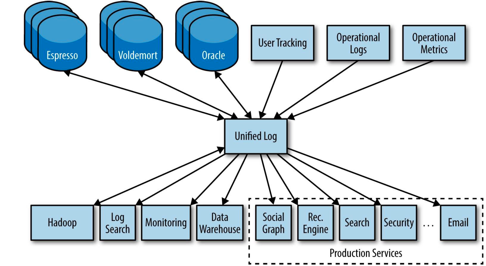

State in scalable architectures
Created by Felipe Fernández / @felipefzdz
About Me
Felipe Fernández
- Work as Software Craftsman for Codurance
- Blog: http://codurance.com/blog/author/felipe-fern%C3%A1ndez
- Twitter: @felipefzdz
About the talk
A story about different solutions around state,
driven by increasing scalability needs.
Disclaimer
Talk based on:
- "Making sense of stream processing"
by Martin Kleppman - "I heart logs" by Jay Kreps
- "Jepsen" by Aphyr
- My professional experience :)
1
State in a
monolithic database
1. State in a monolith database
God database
1. State in a monolith database
God database
- Database as a single source of truth
- Table as original data
- Materialised views, secondary indexes, replicas
1. State in a monolith database
Materialised Views

1. State in a monolith database
Replication

1. State in a monolith database
Secondary indexes

1. State in a monolith database
Replicated log

- Database holds ACID properties for you
2
Data stores
explosion
2. Data stores explosion
Best tool for the job
2. Data stores explosion
Best tool for the job
- Now we need to care about synchronisation
- Network is evil: drops, delays, reorder, duplication
3
ACID properties
3. ACID properties
ACID properties

3. ACID properties
Atomicity
3. ACID properties
Isolation
3. ACID properties
Durability
3. ACID properties
Consistency

4
Data stores
integration
4. Data stores integration
Point to point integration
4. Data stores integration
Point to point integration
- Stored procedures and triggers are hard to maintain
- Data store interfaces are usually not general
- Datastax, Cloudera: integral solutions
4. Data stores integration
Datastax Enterprise
5
Dual
Writes
5. Dual Writes
Do-it-yourself synchronisation
- Atomicity: crash recovery
- Isolation: race conditions
- Consistency: eventual consistency
- Durability: network partitions
6
The log
6. The log
Kafka to the rescue
6. The log
Kafka to the rescue

6. The log
Log guarantees
- Offsets to achieve atomicity
- Order to achieve isolation
- History to replay consistency
- Replication to achieve durability
6. The log
Order / Isolation

6. The log
Offsets / Atomicity

6. The log
History / Consistency
6. The log
Replication / Durability

6. The log
State in scalable architectures
- Log as buffer. No need of back pressure, massive scalability
- Data Stores and Processors are uncoupled
7
Conclusion
7. Conclusion
Turning the database inside out
7. Conclusion
Turning the database inside out